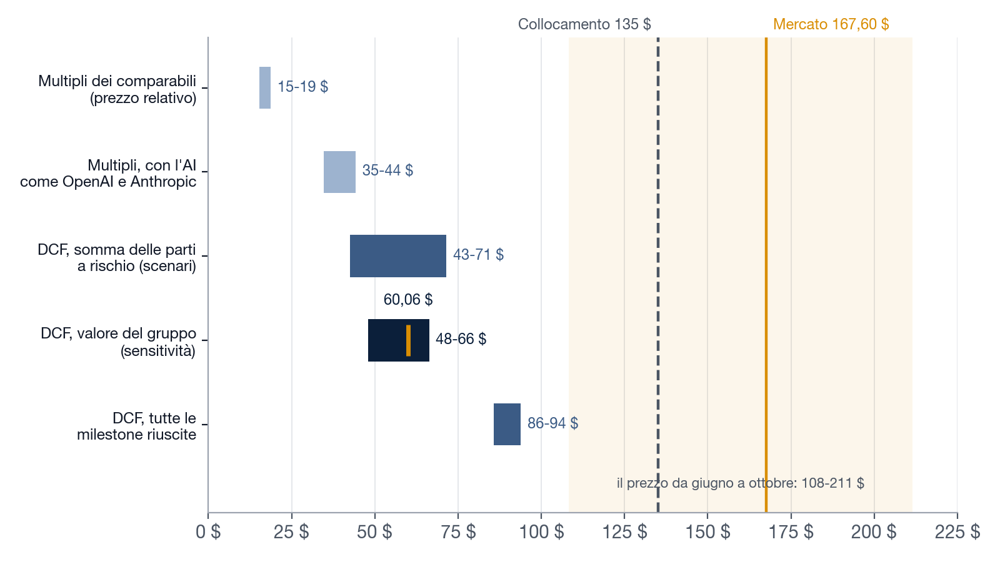
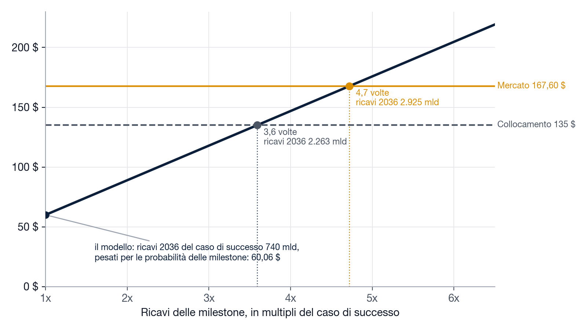
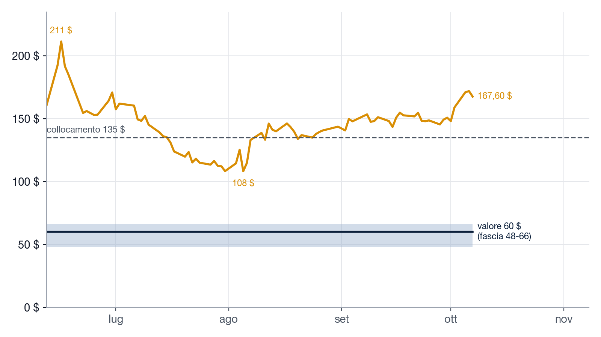
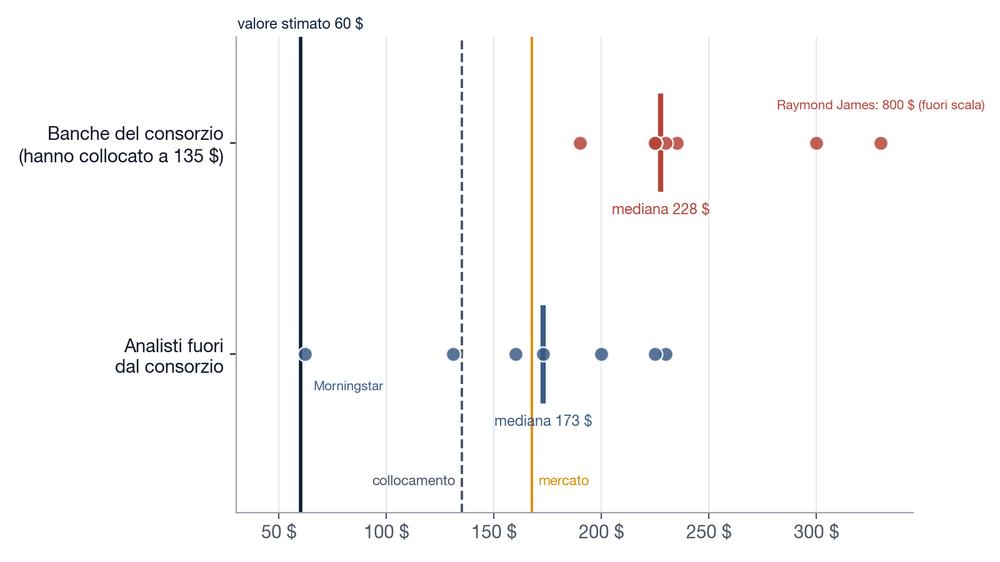

Ogni metodo, il suo valore: nessuno arriva al prezzo
Multipli e flussi stanno tutti sotto il prezzo del collocamento; il prezzo da solo ha oscillato del 95% in quattro mesi.

Il DCF inverso: che cosa contiene il prezzo
Al prezzo di mercato i ricavi delle milestone devono essere 4,7 volte quelli del caso di successo; al prezzo del collocamento 3,6 volte.

Il prezzo si muove, il valore no
Dal debutto il titolo è andato da 108 a 211 $; il valore stimato resta nella fascia 48-66 $.

Chi ha collocato il titolo vede 228 $, chi non l'ha collocato 173 $
Un prezzo di collocamento misura la domanda degli investitori, non i flussi; e le banche del consorzio non sono valutatori indipendenti.


Tutte le fonti, con i link
gherardo200-glitch.github.io/spacex-valutazione/fonti.html
gherardo200-glitch.github.io/spacex-valutazione/fonti.html